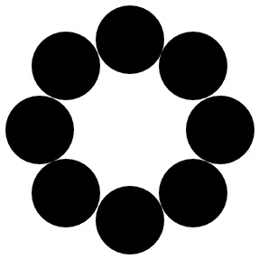

配列と入出力
クラス配列の扱い方
基本となる型の配列の動的な領域確保
Ｃ言語：
#define ARRAY_SIZE 10
int *array = (int *) malloc (sizeof (int) * ARRAY_SIZE); // 動的な領域確保
for (i = 0; i < ARRAY_SIZE; i++) {
array[i] = i;
以下、省略…
C＋＋言語：
int *array = new int [ARRAY_SIZE]; // 動的な領域確保
for (i = 0; i < ARRAY_SIZE; i++) {
array[i] = i;
以下、省略…
他の型（float, double, char, long, unsigned int etc.）に関しても同様である。
構造体／クラス配列の生成法
Ｃ言語（構造体）：
#define ARRAY_SIZE 10
struct Circle *scirc = (struct Circle *) malloc (sizeof (struct Circle) * ARRAY_SIZE); // 動的確保
for (i = 0; i < ARRAY_SIZE; i++) {
scirc[i].x = i;
以下、省略…
Ｃ++言語（クラス）：
Circle **circ = new Circle* [ARRAY_SIZE]; // 動的確保。空の配列の領域を確保。２重ポインタで受け取る。
for (i = 0; i < ARRAY_SIZE; i++) {
circ[i] = new Circle (); // クラスのインスタンスの領域を確保して配列に代入
circ[i]->x = i; // ポインタなので、-> で参照する！
以下、省略…
クラス Circle に デフォルト構築子（引数を持たない構築子）が定義されている場合 には、以下の様な配列の生成法が可能となる。
Circle circ[ARRAY_SIZE]; // 静的確保。ポインタではない！
// 動的に確保する場合は、Circle *circ = new Circle [ARRAY_SIZE];
for (i = 0; i < ARRAY_SIZE; i++) {
circ[i].x = i;
以下、省略…
多重配列
標準的な型変数の場合：
#define ROW_SIZE 3
#defien COLUMN_SIZE 4
// × float **m_array = new float [ROW_SIZE][COLUMN_SIZE]; これはエラー！ newは複数の [ ] を扱えない
float **m_array = new float* [ROW_SIZE]; // ここで、Ｃ言語の動的確保と同様に、ポインタの配列を確保
for (i = 0; i < ROW_SIZE; i++) {
m_array[i] = new float [COLUMN_SIZE]; // １次元分の配列領域を確保
for (k = 0; k < COLUMN_SIZE; k++) {
m_array[i][k] = i + k;
以下、省略…
クラスの場合：
Circle ***circ = new Circle** [ROW_SIZE];
for (int i = 0; i < ROW_SIZE; i++) {
circ[i] = new Circle* [COLUMN_SIZE];
for (int j = 0; j < COLUMN_SIZE; j++)
circ[i][j] = new Circle (i, j, 10);
}
ポイント：（クラス配列の領域確保）
- 配列の動的な領域確保は、C＋＋言語では malloc 関数は用いずに、new 演算子を用いる。
- 配列の静的な確保は、クラス以外の変数であればC言語と同様に可能である。
◯ int data[10]; ◯ struct Circle circ[ARRAY_SIZE];
標準関数
ここでは、文字列と標準入出力およびファイルの入出力を扱う標準関数の扱い方を学ぶ。
標準関数の名称と機能| 名称 | 機能 | 説明文書へのリンク |
|---|---|---|
| std::string | 文字列の操作 | 詳細な解説 |
| std::cin | 標準入力（キーボード）からの入力 | 詳細な解説 |
| std::cout | 標準出力（ディスプレイ）への出力 | 詳細な解説 |
| std::ofstream | ファイルへの書き出し | 詳細な解説 |
| std::ifstream | ファイルからの読み込み | 詳細な解説 |
SVGファイルの生成
ここでは、クラス Circle の描画結果を可視化するために、 SVG ファイルを生成する。
SVG (Scalable Vector Graphics）の略語であり、２次元図形をベクター画像として描画するための、
XMLを基準に設計された形式である。
クラス Circle の描画結果を SVG ファイルとして生成するクラス svg を、以下のように作成する。
属性の値は文字列として、クオーテーション（またはダブルクオーテーション）で囲む必要がある。
Circle クラス内でのSVG形式の円描画
Circle.cpp でのメンバ関数 draw の変更
void Circle::draw (svg* svgObj) { // 円の描画関数（svg オブジェクトのポインタを受け取る）
svgObj->drawCircle(x, y, rad); // 中心 (x,y)、半径 r の円の輪郭描画（SVG形式）
}
ただし、Circle.h ファイルの冒頭部分に、
#include "svg.h"
を追加し、
void draw (svg* svgObj); // 引数はポインタ渡しCircle 描画の簡単な実行例（mainCicrle.cpp）
#include <iostream>
#include "Circle.h"
int main() {
svg svgObj; // SVGドキュメントを生成するオブジェクト
Circle circle; // 円のオブジェクト
int posX, posY, radius; // 円の描画位置と半径
std::cout << "Input X Coordinate => "; // 画面にメッセージ出力
std::cin >> posX; // 円の座標（X）の入力
std::cout << "Input Y Coordinate => ";
std::cin >> posY; // 円の座標（Y）の入力
std::cout << "Input Radius => ";
std::cin >> radius; // 円の半径の入力
circle.setPosition(posX, posY); // 円の描画位置の指定
circle.setRadius(radius); // 円の半径の指定
svgObj.open("circle.html", 640, 400); // ファイルを開く
circle.draw(&svgObj); // 円の描画（svgObj のポインタを渡す）
svgObj.close(); // ファイルを閉じる
}
生成された SVG ファイルの内容は、ブラウザで開くことによって確認できる。
標準関数のライブラリーを使用する場合には、コンパイル時に -std=c++11 のオプションを指定する必要がある。
コンパイル実行例
g++ -std=c++11 -c svg.cpp
補足：コピーできないオブジェクト
上記の circle.draw(&svgObj); は、svgクラスのポインタを引数として渡しているが、これには理由がある。
仮に、circle.draw(svgObj); としてインスタンスを引数として渡す場合、実際には そのコピーが関数 circle.draw に渡される。
しかし、svg クラスのメンバ変数には、コピーが禁止されている std::ofstream ofs; が含まれているので、
svg のインスタンスもコピーが禁止となるので、circle.draw(svg); のように宣言するとコンパイルエラーとなる。
ファイル出力のストリーム std::ofstream がコピー禁止なのは、ファイルの書き込みに際して、複数のインスタンスからの競合を避けるためである。
Ｃ＋＋では、ポインタ変数を引数として用いる代わりに、参照渡しという方法もある（第６回目の講義で説明する）。
- C言語での関数 printf を用いて画面にテキストを出力できるが、C＋＋ではストリーム出力と呼ばれる方法も使用できる。
- std::cout << "Hello !"; により、標準出力（ディスプレイ画面）に文字列 Hello ! が出力される。
- 標準入力からのストリーム入力は std::cin >> param でキーボード入力した値を変数 param に代入できる。
- C言語の scanf では、ポインタ変数 ¶m を渡す必要があったが、ストリーム入力では変数そのものを指定すれば良い。
- C言語の入力用関数群もそのまま使用できる。
- ファイルへの出力には std::ofstream クラスのオブジェクトに対して、出力内容（文字列）を << で繋げていく（Circle のメンバ変数 draw を参照）
- ストリーム入出力を使用する際には、#include <iostream> でヘッダファイルを読み込む必要がある。
- std:: の表記を省略したければ、using namespace std; の記述をヘッダファイルの冒頭に追加する（便利ではあるが、推奨はしない）。
Exercise (No.2)
Implement the program that draws N circles arraged along a ring while contacting each other as shown in the figures below. The program must include Array of Circle class and the number of circles is given by numerical input of a keyboard with iostream (std::cin).
The distances between the center of ring and the centers of each circles are fixed at 100.
Figure : exmaple of execution
 
For N == 8 For N == 30
Trigonometric function such as sin, cos, and sqrt are defined in a mathematical library and its header file therefore should be included as
#include <math.h>
Notice that in SVG, the origin (0,0) of 2D coordinates is located at the upper-left corner of a window, and X and Y axes are oriented to right and down directions, respectively. Also, the resolution of the coordinates is usually set by those of pixels, that is, the coordinates spans 1920 x 1080 in a whole window size.
提出課題 (その2)
実行後にキーボードで入力した（ただし，iostream の std::cin を使用）整数値Ｎに対して、円環上に互いに接するＮ個の円を描画するプログラムをCircle クラスの配列を用いて作成する。
ただし、円環全体の中心と周囲に配置される円の中心との距離を100とする。
プログラム実行例：
円が８個の場合 円が３０個の場合
三角関数（sin, cos 等）や平方根（sqrt）を使用する場合は、数学関数ライブラリ用のヘッダファイルを以下の様に読み込んでおく。
#include <math.h>注：svg では、ウィンドウの向かって左上隅が座標原点(0,0)に取られ、右方向にX座標、下方向にY座標が張られる。また、座標の解像度は指定がない場合は画素の解像度と同じになる（したがって、画面全体では1920 x 1080 の大きさとなる）。